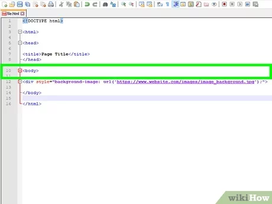

1.Formato de cores (RGB, Hexadecimal):
• RGB:
O valor de cor RGB é representado por fontes de luz vermelha, verde e azul. Na linguagem Html, uma cor pode ser escolhida através da
formula RGB (vermelho, verde, azul), onde cada parâmetro possui 256 e por ele são definidos a intensidade da cor, com isso temos uma
grande possibilidade de escolhas de cor.
Obs: Os tons de cinza são definidos usando valores iguais para os três parâmetros.
• Hex
Diferente do RGB uma cor em hexadecimal é definida com #RRGGBB onde RR(vermelho), GG(verde) e BB(azul) especificam os componentes da cor.
Onde RR (vermelho), GG (verde) e BB (azul) são valores hexadecimais entre 00 e ff, onde para fazer a cor vermelha o RR(vermelho) deve
ser o valor mais alto e os outros parâmetros GG e BB (verde e azul), os mais baixos.
Obs: A mesma regra dos tons de cinza do RGB, também se aplicam ao Hexadecimal.
2.Psicologia das cores:
A psicologia das cores ajuda a enfatizar conceitos, mensagens e ativar emoções nas pessoas.
Ela é muito usada nas áreas de design, comunicação e estratégias de marketing.
Ela elas se pode manipular algum sentimento no consumidor e atrai-lo.
Por isso é importante saber quando utilizar cada cor para determinado site ou projeto que está sendo realizado.
3.Cores em elementos de texto:
Em Html podemos especificar as cores com alguns nomes predefinidos como:
“Tomato”; “Orange”; “DogerBlue” e etc.
A partir disso podemos usar o comando: “style="color:Tomato;””, para definir
a cor de um texto, e também podemos colocar uma borda colorida em volta do texto
com o comando “style="border:2px solid Tomato;"”.
4.Cores em elementos de Fundo (Background):
Além da cor do texto e da cor da borda, podemos alterar a cor do fundo, usando as mesmas
cores citadas anteriormentes, mas usando o comando style="background-color:rgb(255, 99, 71);" por exemplo.
5.Tipo de extensões para manipulação de imagens
Em html temos essas extensões comuns que são suportadas em todos os browsers:
• .apng : gráficos de rede portáteis animados
• .gif: imagens animadas
• .ico,.cur: ícone Microsoft
• .jpg,.jpeg,. jfif,.pjpeg,.pjp : Agrupa um grande grupo de imagens. São as extensões mais comuns em meio a web
• .png: gráfico de rede portátil
• .svg: gráfico de vetor escalado

6. Imagens como elemento da página e seus atributos
• "img" defina a imagem
• "map" definauma imagem map
• "área" define uma área clicavel na imagem map
• "Picture" define um container para múltiplas imagens
7.Imagens em elementos de fundo (background)
Para adicionar uma imagem de fundo em um elemento HTML, usamos o atributo style.
8. Videos
• O "controls" atributo adiciona controles de vídeo, como reproduzir, pausar e volume.
• É uma boa ideia incluir sempre "width" e "height" atributos. Se a altura e a largura não
estiverem definidas, a página poderá piscar enquanto o vídeo é carregado.
• O "source" elemento permite especificar arquivos de vídeo alternativos que o navegador pode
escolher. O navegador usará o primeiro formato reconhecido.
• O texto entre as tags "video" e "/video"só será exibido em navegadores que
não suportam o "video" elemento.